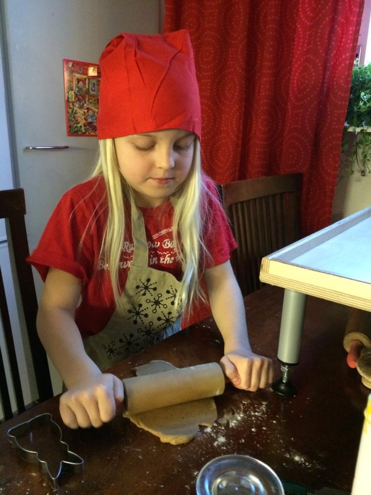
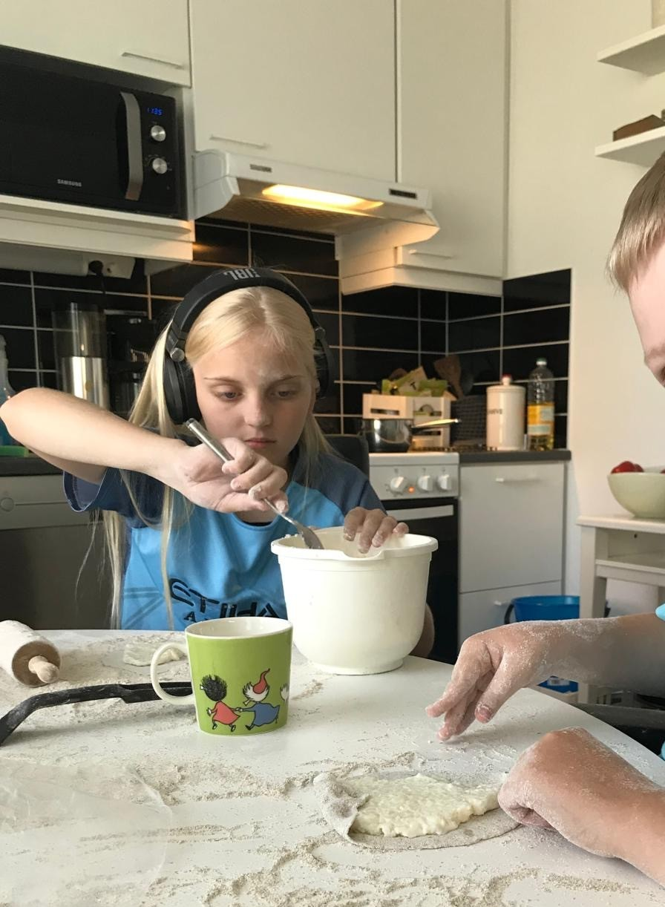
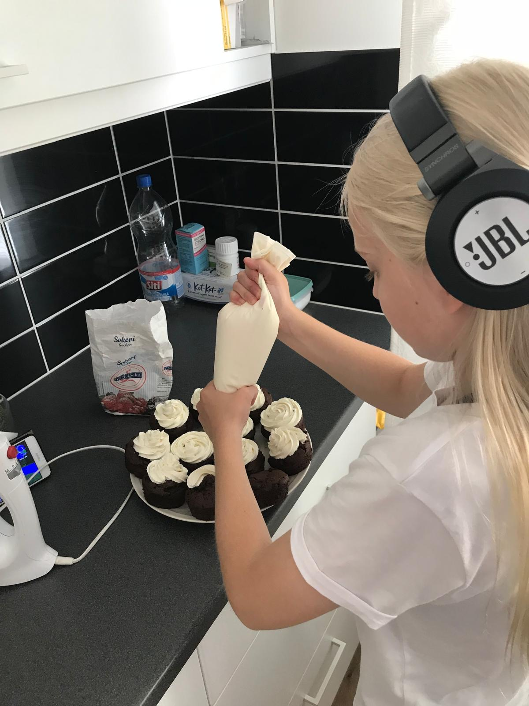
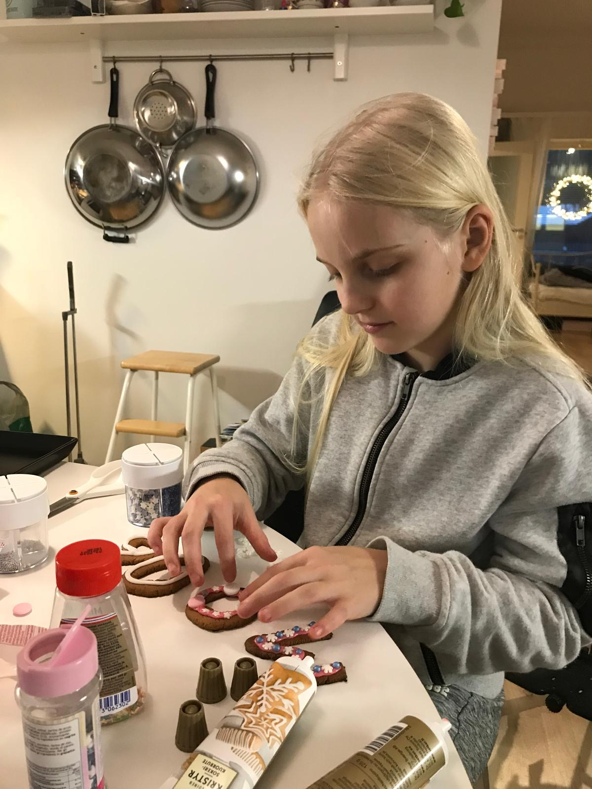

Welcome to MENU FINDER!
This is a website dedicated to helping you find different and delicious menus.
I have listed various recipes and meal ideas for you to explore.
All menus have appetizers, main courses, desserts and drinks for the specific theme.
Feel free to browse through the different sections and discover new culinary inspirations!
Why did I create this website?
I wanted to create a platform where people can easily find and explore different menus so they don't have to spend time searching for recipes from different sources.
I hope you find this website useful and enjoy the menus I have curated for you!
If you want to chat with others or comment on the menus, feel free to make an account for this site or if you already have an account just sign in in the signin page.
The chat page is a place where you can discuss different menus, share your own recipes, and connect with other food enthusiasts.
You can also save your favorite menus by liking them once you are signed in.
This page uses recipes from different sites and sources, I have just linked them here for easier access.
All credits for the recipes go to their respective owners and creators.
About me
My name is Mette Okkonen and I am a student at Stadin ammattiopisto.
Before my coding studies I studied in a culinary school for a year and learned great skills in cooking and baking.
Altough I enjoyed my time in culinary school, the career wasn't for me as an allergic person since I couldn't even taste most of the dishes I made so I wanted to pursue a career in web design and development.
I have always been passionate about food and cooking, so creating a website about menus and recipes was a natural choice for me.
Here is a few pictures of me baking as a child!



